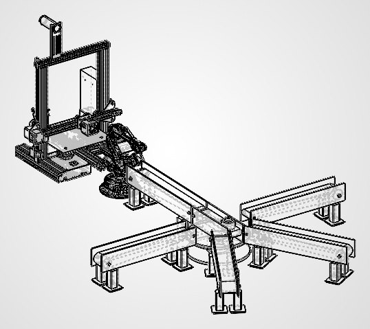
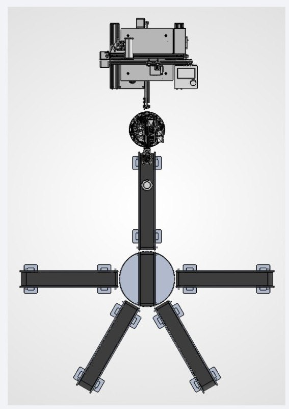
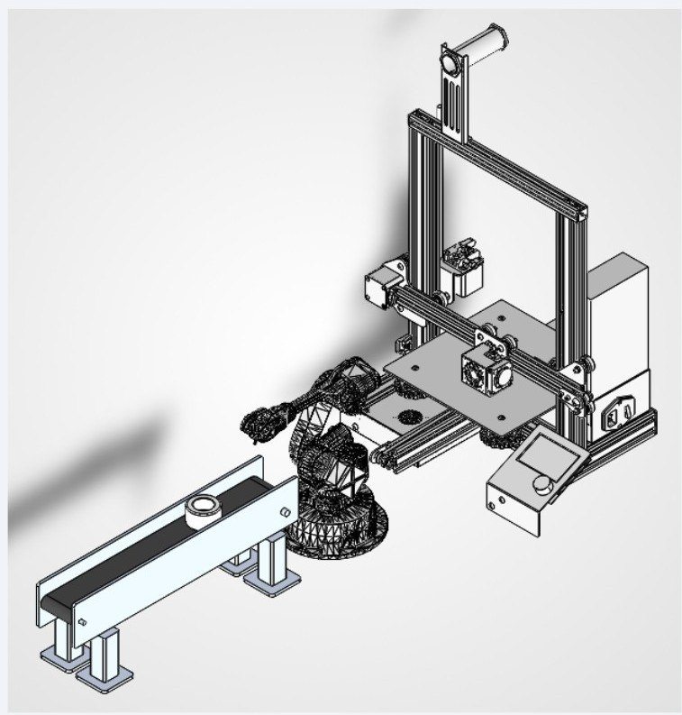
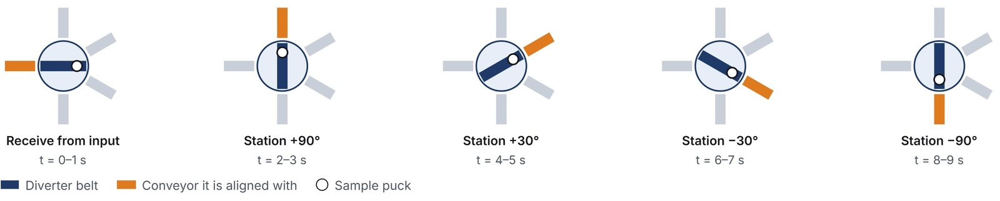

A cell I designed and proposed to extend the lab's automation work: a robot picks each finished part off a 3D printer and sets it on a belt, and a rotating diverter sends it to any of 4 stations with no one touching it. I closed a 75 mm gap between belts to 32 mm and checked the motion for collisions.
| Stations | 4 outputs at 60° spacing |
| Model | 10 custom parts, 2 subassemblies |
| Status | Complete in CAD, with Motion Analysis |



